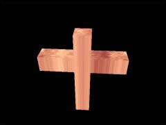

|
第31課
|
 |
|  |
模型加載:
你知道大名鼎鼎的Milkshape3D建模軟件麼，我們將加載它的模型，當然你可以加載任何你認為不錯的模型。 |
|
 |
 |
這篇渲染模型的文章是由Brett Porter所寫的。
這篇教程的代碼是從PortaLib3D中提取出來的，PortaLib3D是一個可以讀取3D文件實用庫。
這篇教程的代碼是以第六課為基礎的，我們只討論改變的部分。
這課中使用的模型是從Milkshape3D中提取出來的，Milkshape3D是一個非常好的建模軟件，它包含了自己的文件格式，所以你能很容易去分析和理解。
但是文件格式並不能使你加載一個模型，你必須自己定義一個結構去保存數據，接著把數據讀入那個結構，我們將告訴你如何定義這樣一個結構。
模型的定義在model.h中，好吧我們開始吧： |  |
// 頂點結構
struct Vertex
{
char m_boneID; // 頂點所在的骨骼
float m_location[3];
};
// 頂點的個數和數據
int m_numVertices;
Vertex *m_pVertices;
|
在這一課你，你可以忽略m_boneID，我們將在以後的教程中介紹骨骼動畫。m_location定義頂點的位置。
下面是三角形結構 | |
// 三角形結構
struct Triangle
{
float m_vertexNormals[3][3];
float m_s[3], m_t[3];
int m_vertexIndices[3];
};
// 使用的三角形
int m_numTriangles;
Triangle *m_pTriangles;
|
3個頂點構成一個三角形，m_vertexIndices保存了三個頂點的索引。 m_s 和 m_t儲存了三個頂點的紋理坐標。m_vertexNormals保存了三個頂點的法線。
下面我們定義網格結構 | |
// 網格結構
struct Mesh
{
int m_materialIndex;
int m_numTriangles;
int *m_pTriangleIndices;
};
// 使用的網格
int m_numMeshes;
Mesh *m_pMeshes;
|
m_pTriangleIndices指向包含在網格中三角形的數據，它是動態分配的。 m_materialIndex
指向了這個網格所用的材質。 |
|
// 材質屬性
struct Material
{
float m_ambient[4], m_diffuse[4], m_specular[4], m_emissive[4];
float m_shininess;
GLuint m_texture;
char *m_pTextureFilename;
};
// 使用的紋理
int m_numMaterials;
Material *m_pMaterials;
|
這裡我們使用與OpenGL中相對的材質。 下面的代碼用來載入模型，我們通過重載loadModelData函數來實現它。
我們創建了一個新類MilkshapeModel,它是從Model繼承而來的。 |
|
bool MilkshapeModel::loadModelData( const char *filename )
{
ifstream inputFile( filename, ios::in | ios::binary | ios::nocreate );
if ( inputFile.fail())
return false; // 不能打開文件，返回失敗
|
以二進制的方式打開文件，如果失敗則返回 |
|
inputFile.seekg( 0, ios::end );
long fileSize = inputFile.tellg();
inputFile.seekg( 0, ios::beg );
|
返回文件大小 |
|
byte *pBuffer = new byte[fileSize];
inputFile.read( pBuffer, fileSize );
inputFile.close();
|
分配一個內存，載入文件，並關閉文件 |
|
const byte *pPtr = pBuffer;
MS3DHeader *pHeader = ( MS3DHeader* )pPtr;
pPtr += sizeof( MS3DHeader );
if ( strncmp( pHeader->m_ID, "MS3D000000", 10 ) != 0 )
return false; // 如果不是一個有效的MS3D文件則返回
if ( pHeader->m_version < 3 || pHeader->m_version > 4 )
return false; // 如果不能支持這種版本的文件，則返回失敗
|
上面的文件讀取文件頭 |
|
int nVertices = *( word* )pPtr;
m_numVertices = nVertices;
m_pVertices = new Vertex[nVertices];
pPtr += sizeof( word );
int i;
for ( i = 0; i < nVertices; i++ )
{
MS3DVertex *pVertex = ( MS3DVertex* )pPtr;
m_pVertices[i].m_boneID = pVertex->m_boneID;
memcpy( m_pVertices[i].m_location, pVertex->m_vertex, sizeof( float )*3 );
pPtr += sizeof( MS3DVertex );
}
|
上面的代碼讀取頂點數據 |
|
int nTriangles = *( word* )pPtr;
m_numTriangles = nTriangles;
m_pTriangles = new Triangle[nTriangles];
pPtr += sizeof( word );
for ( i = 0; i < nTriangles; i++ )
{
MS3DTriangle *pTriangle = ( MS3DTriangle* )pPtr;
int vertexIndices[3] = { pTriangle->m_vertexIndices[0], pTriangle->m_vertexIndices[1], pTriangle->m_vertexIndices[2] };
float t[3] = { 1.0f-pTriangle->m_t[0], 1.0f-pTriangle->m_t[1], 1.0f-pTriangle->m_t[2] };
memcpy( m_pTriangles[i].m_vertexNormals, pTriangle->m_vertexNormals, sizeof( float )*3*3 );
memcpy( m_pTriangles[i].m_s, pTriangle->m_s, sizeof( float )*3 );
memcpy( m_pTriangles[i].m_t, t, sizeof( float )*3 );
memcpy( m_pTriangles[i].m_vertexIndices, vertexIndices, sizeof( int )*3 );
pPtr += sizeof( MS3DTriangle );
}
|
上面的代碼用來讀取三角形信息，因為MS3D使用窗口坐標系而OpenGL使用笛卡兒坐標系，所以需要反轉每個頂點Y方向的紋理坐標 |
|
int nGroups = *( word* )pPtr;
m_numMeshes = nGroups;
m_pMeshes = new Mesh[nGroups];
pPtr += sizeof( word );
for ( i = 0; i < nGroups; i++ )
{
pPtr += sizeof( byte );
pPtr += 32;
word nTriangles = *( word* )pPtr;
pPtr += sizeof( word );
int *pTriangleIndices = new int[nTriangles];
for ( int j = 0; j < nTriangles; j++ )
{
pTriangleIndices[j] = *( word* )pPtr;
pPtr += sizeof( word );
}
char materialIndex = *( char* )pPtr;
pPtr += sizeof( char );
m_pMeshes[i].m_materialIndex = materialIndex;
m_pMeshes[i].m_numTriangles = nTriangles;
m_pMeshes[i].m_pTriangleIndices = pTriangleIndices;
}
|
上面的代碼填充網格結構 |
|
int nMaterials = *( word* )pPtr;
m_numMaterials = nMaterials;
m_pMaterials = new Material[nMaterials];
pPtr += sizeof( word );
for ( i = 0; i < nMaterials; i++ )
{
MS3DMaterial *pMaterial = ( MS3DMaterial* )pPtr;
memcpy( m_pMaterials[i].m_ambient, pMaterial->m_ambient, sizeof( float )*4 );
memcpy( m_pMaterials[i].m_diffuse, pMaterial->m_diffuse, sizeof( float )*4 );
memcpy( m_pMaterials[i].m_specular, pMaterial->m_specular, sizeof( float )*4 );
memcpy( m_pMaterials[i].m_emissive, pMaterial->m_emissive, sizeof( float )*4 );
m_pMaterials[i].m_shininess = pMaterial->m_shininess;
m_pMaterials[i].m_pTextureFilename = new char[strlen( pMaterial->m_texture )+1];
strcpy( m_pMaterials[i].m_pTextureFilename, pMaterial->m_texture );
pPtr += sizeof( MS3DMaterial );
}
reloadTextures();
|
上面的代碼加載紋理數據 |
|
delete[] pBuffer;
return true;
}
|
上面的代碼設置好了一切參數，但紋理還沒有載入內存，下面的代碼完成這個功能。 |
|
void Model::reloadTextures()
{
for ( int i = 0; i < m_numMaterials; i++ )
if ( strlen( m_pMaterials[i].m_pTextureFilename ) > 0 )
m_pMaterials[i].m_texture = LoadGLTexture( m_pMaterials[i].m_pTextureFilename );
else
m_pMaterials[i].m_texture = 0;
}
|
有了數據，就可以寫出繪製函數了，下面的函數根據模型的信息，按網格分組，分別繪製每一組的數據。 |
|
void Model::draw()
{
GLboolean texEnabled = glIsEnabled( GL_TEXTURE_2D );
// 按網格分組繪製
for ( int i = 0; i < m_numMeshes; i++ )
{
int materialIndex = m_pMeshes[i].m_materialIndex;
if ( materialIndex >= 0 )
{
glMaterialfv( GL_FRONT, GL_AMBIENT, m_pMaterials[materialIndex].m_ambient );
glMaterialfv( GL_FRONT, GL_DIFFUSE, m_pMaterials[materialIndex].m_diffuse );
glMaterialfv( GL_FRONT, GL_SPECULAR, m_pMaterials[materialIndex].m_specular );
glMaterialfv( GL_FRONT, GL_EMISSION, m_pMaterials[materialIndex].m_emissive );
glMaterialf( GL_FRONT, GL_SHININESS, m_pMaterials[materialIndex].m_shininess );
if ( m_pMaterials[materialIndex].m_texture > 0 )
{
glBindTexture( GL_TEXTURE_2D, m_pMaterials[materialIndex].m_texture );
glEnable( GL_TEXTURE_2D );
}
else
glDisable( GL_TEXTURE_2D );
}
else
{
glDisable( GL_TEXTURE_2D );
}
glBegin( GL_TRIANGLES );
{
for ( int j = 0; j < m_pMeshes[i].m_numTriangles; j++ )
{
int triangleIndex = m_pMeshes[i].m_pTriangleIndices[j];
const Triangle* pTri = &m_pTriangles[triangleIndex];
for ( int k = 0; k < 3; k++ )
{
int index = pTri->m_vertexIndices[k];
glNormal3fv( pTri->m_vertexNormals[k] );
glTexCoord2f( pTri->m_s[k], pTri->m_t[k] );
glVertex3fv( m_pVertices[index].m_location );
}
}
}
glEnd();
}
if ( texEnabled )
glEnable( GL_TEXTURE_2D );
else
glDisable( GL_TEXTURE_2D );
}
|
有了上面的函數，我們來看看如何使用它們。首先，我們定義一個MilkshapeModel類。 |
|
Model *pModel = NULL; // 定義一個指向模型類的指針
|
接著加載模型文件 |
|
pModel = new MilkshapeModel();
if ( pModel->loadModelData( "data/model.ms3d" ) == false )
{
MessageBox( NULL, "不能加載data/model.ms3d文件", "加載錯誤", MB_OK | MB_ICONERROR );
return 0; // 返回失敗
}
|
接著載入紋理 |
|
pModel->reloadTextures();
|
完成了初始化操作，我們來實際繪製我們的模型 |
|
int DrawGLScene(GLvoid)
{
glClear(GL_COLOR_BUFFER_BIT | GL_DEPTH_BUFFER_BIT); // 情況緩存
glLoadIdentity();
gluLookAt( 75, 75, 75, 0, 0, 0, 0, 1, 0 );
glRotatef(yrot,0.0f,1.0f,0.0f);
//繪製模型
pModel->draw();
yrot+=1.0f;
return TRUE; //成功返回
}
|
簡單吧？下一步我們該做什麼？在以後的教程中，我將會加入骨骼動畫的知識，到時候見吧！
 |
版權與使用聲明:
我是個對學習和生活充滿激情的普通男孩,在網絡上我以DancingWind為暱稱，我的聯繫方式是zhouwei02@mails.tsinghua.edu.cn，如果你有任何問題，都可以聯繫我。
引子
網絡是一個共享的資源，但我在自己的學習生涯中浪費大量的時間去搜索可用的資料，在現實生活中花費了大量的金錢和時間在書店中尋找資料，於是我給自己起了個暱稱DancingWind，其意義是想風一樣從各個知識的站點中吸取成長的養料。在飄蕩了多年之後，我決定把自己收集的資料整理為一個統一的資源庫。
版權聲明
所有DancingWind發表的內容，大多都來自共享的資源，所以我沒有資格把它們據為己有，或聲稱自己為這些資源作出了一點貢獻。故任何人都可以複製，修改，重新發表，甚至以自己的名義發表，我都不會追究，但你在做以上事情的時候必須保證內容的完整性，給後來的人一個完整的教程。最後，任何人不能以這些資料的任何部分，謀取任何形式的報酬。
發展計劃
在國外，很多資料都是很多人花費幾年的時間慢慢積累起來的。如果任何人有興趣與別人共享你的知識，我很歡迎你與我聯繫，但你必須同意我上面的聲明。
感謝
感謝我的母親一直以來對我的支持和在生活上的照顧。
感謝我深愛的女友田芹，一直以來默默的在精神上和生活中對我的支持，她甚至把買衣服的錢都用來給我買書了，她真的是我見過的最好的女孩，希望我能帶給她幸福。
資源下載:
文檔 網頁格式
PDF格式
源碼 RAR格式 |
|
|